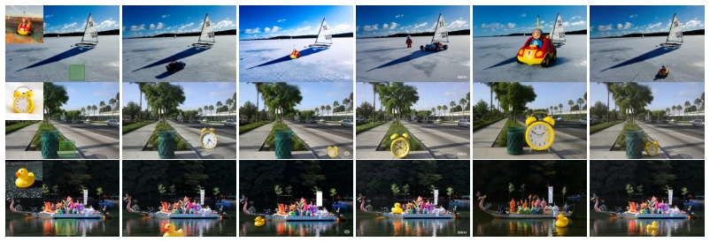
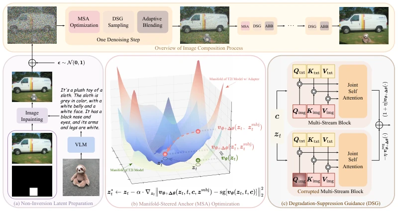
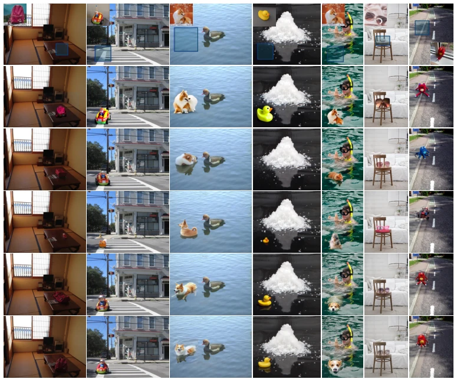
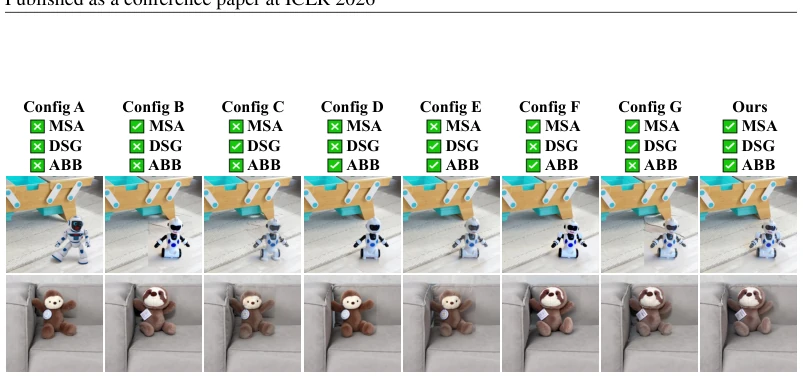
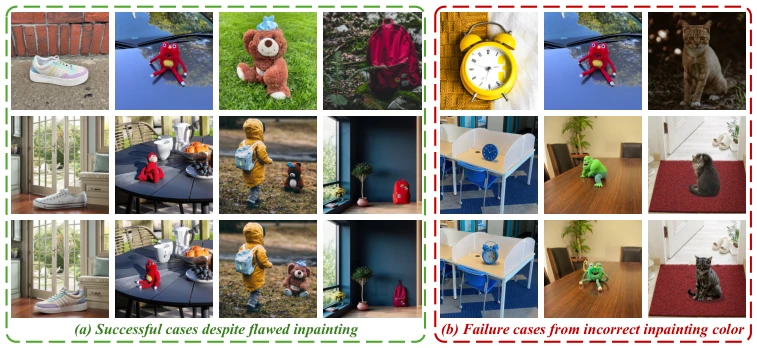
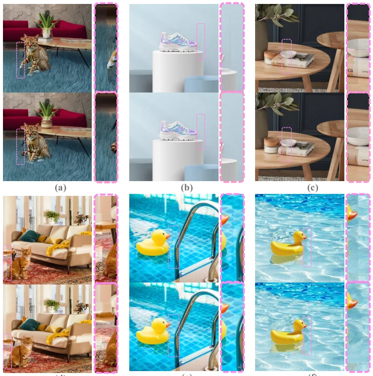
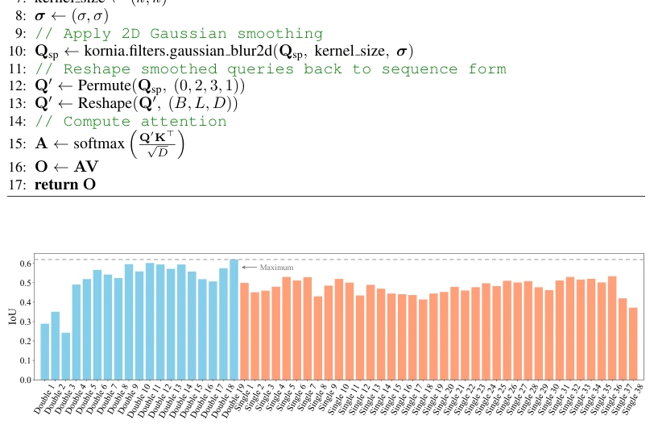
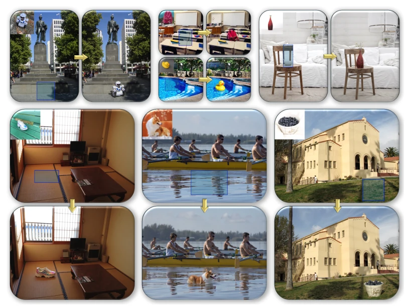
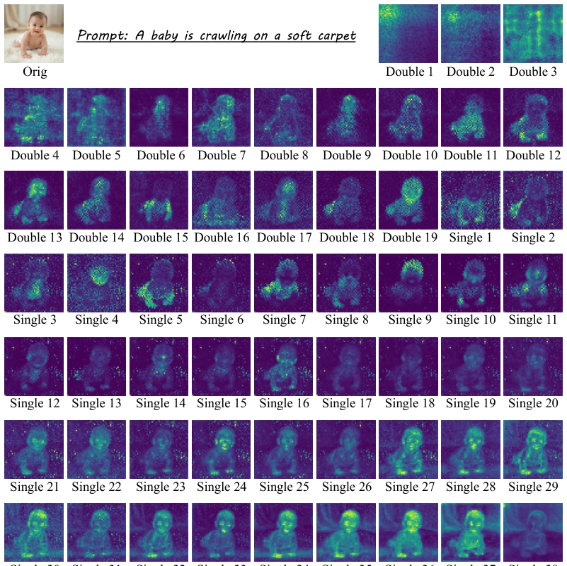
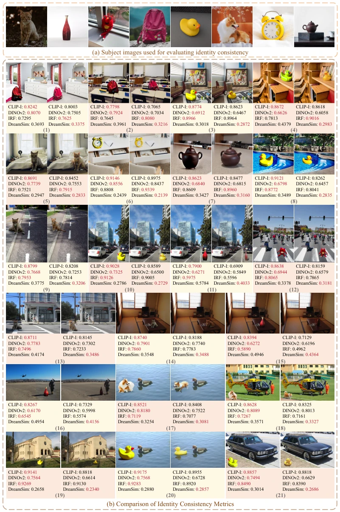

This paper applies a "failed physics exam" patch to FLUX. SHINE claims to enable objects to blend "seamlessly" without training, which sounds appealing, but essentially uses adapters (IP-Adapter) to forcibly drag the latent space in the correct direction. Although the MSA loss function is clever, backpropagating through MMDiT involves significant computational cost. ABB replacing user masks with attention maps indeed solves seams, but Figure 8 exposes a fatal flaw: if the inpainting prompt color is wrong, it accepts it without question. Furthermore, although claiming to utilize physical priors, it is actually "exploiting" the capabilities of the base model. Overall, it is another masterpiece under the "training-free" trend, but do not expect it to truly understand physics; it simply fits better and relies on external adapter quality.
研究动机Motivation
现有大模型（如 GPT-5, Gemini-2.5）在图像合成上依然“手残”，光照不一致、阴影缺失是常态。微调模型（如 AnyDoor (Chen et al., 2024c), UniCombine）依赖合成数据，导致物理先验丢失，且分辨率僵化。无训练方法（如 TF-ICON (Lu et al., 2023d), EEdit (Yan et al., 2025)）要么依赖图像反演（锁定物体姿态），要么依赖脆弱的注意力手术。作者指出 FLUX 等基座模型其实有物理先验，但缺乏框架释放。现有基准（512x512）也无法评估复杂光照和高分辨率场景。因此，如何在不微调的情况下利用基座模型的物理先验，解决复杂光照和高分辨率下的合成问题，成为关键痛点。
Existing large models (e.g., GPT-5, Gemini-2.5) remain "clumsy" in image synthesis; inconsistent lighting and missing shadows are the norm. Fine-tuned models (e.g., AnyDoor (Chen et al., 2024c), UniCombine) rely on synthetic data, leading to loss of physical priors and rigid resolution. Training-free methods (e.g., TF-ICON (Lu et al., 2023d), EEdit (Yan et al., 2025)) either rely on image inversion (locking object pose) or fragile attention surgery. The authors point out that base models like FLUX actually possess physical priors, but lack a framework to release them. Existing benchmarks (512x512) also fail to evaluate complex lighting and high-resolution scenes. Therefore, how to leverage the physical priors of base models without fine-tuning to solve synthesis problems under complex lighting and high resolution has become a key pain point.

Figure 2: Image composition from advanced multimodal models under three challenging conditions: backlighting, shadows, and water surfaces. Refer to Appendix H for prompt details.
The overall process is divided into four steps: 1. Non-inversion latent space preparation: Describe the subject using a VLM, combine with Inpainting to generate an initial image, add noise rather than invert, avoiding pose locking. 2. MSA loss: Utilize adapters like IP-Adapter (Ye et al., 2023) to guide latent variables, making predictions close to the base model on the adapter manifold, balancing subject fidelity and background structure, achieved through gradient optimization. 3. DSG guidance: Construct negative velocity by blurring Qimg, pushing the sampling trajectory away from low-quality regions, solving over-saturation issues. 4. ABB fusion: Replace user masks with masks generated from attention maps, smoothing the transition during early denoising to avoid seams. This method requires no architecture modification, is compatible with base models like FLUX.1-dev (Black Forest Labs, 2024a), achieves seamless synthesis by optimizing latent variables rather than weights, and simultaneously utilizes attention mechanisms to enhance fusion naturalness.

Figure 3: Overview of the proposed framework. (a) The noisy latent is created by inpainting the background with a VLM-derived object description, then adding Gaussian noise. (b) Manifold- Steered Anchor (MSA) loss guides noisy latents toward faithfully capturing the reference subject (red arrow), while preserving the structural integrity of the background. Concretely, it enforces that the prediction of the optimized latent z∗ t on the adapter-augmented model’s manifold remains close to the prediction of the original latent zt on the base model’s manifold. (c) Degradation-Suppression Guidance (DSG) constructs a negative velocity pointing toward low-quality regions by blurring Qimg and, in a CFG-like manner, steers the trajectory away from this low-quality distribution.

Figure 6: Qualitative comparison of our method with multiple baselines in challenging scenarios, drawn from our benchmark dataset. More qualitative comparisons are available in Appendix O.

Figure 7: Qualitative ablation study comparing different variants of our framework.
Construct the ComplexCompo benchmark (300 pairs, containing complex lighting/reflection/multi-resolution), following DreamEditBench (Li et al., 2023b). Comparison baselines include AnyDoor (Chen et al., 2024c), UniCombine, EEdit (Yan et al., 2025), etc. Metrics cover CLIP-I, DINOv2, and human-aligned DreamSim, ImageReward. SHINE achieves SOTA on human preference metrics, especially outperforming AnyDoor's "paste-like feel" in low-light and shadow scenes. Ablation experiments confirm MSA improves identity consistency, DSG improves image quality, and ABB eliminates seams. However, Figure 8 shows that inpainting errors are inherited. Furthermore, the LoRA version has higher identity consistency than the Adapter version, indicating that adapter quality affects the final outcome.

Figure 8: Composition inherit erroneous colors if the inpainting prompt specifies an incorrect color.

Figure 9: Comparison of composites from our Adaptive Background Blending (ABB) method and direct blending with a rectangular mask. Boundary regions within pink dashed boxes are enlarged for clarity. Please zoom in to see details.

Figure 10: The IoU is calculated between the mask produced from each block and the ground-truth mask, which is obtained by segmenting the final generated images using SAM. The IoU for each block is averaged over 100 images.
其他图片Other Figures

Figure 1: Showcase of our training-free image composition method, SHINE. This gallery highlights SHINE’s ability to seamlessly integrate subjects into complex scenes, including low-light condi- tions, intricate shadows, and water reflections.

Figure 11: Visualization of cross-attention maps from different MMDiT blocks of FLUX.1-dev.

Figure 12: Comparison of Subject Identity Metrics. (a) Reference subject images used for metric calculations. (b) Image pairs generated by AnyDoor (left) and our method (right), with correspond- ing CLIP-I (↑), DINOv2 (↑), IRF (↑), and DreamSim (↓) scores displayed below each image; the better score is highlighted in red. Despite AnyDoor’s results appearing less realistic and consistent, they often achieve higher CLIP-I, DINOv2, and IRF scores, indicating that these metrics may not reliably reflect compositional quality. In contrast, DreamSim provides a more reliable assessment.